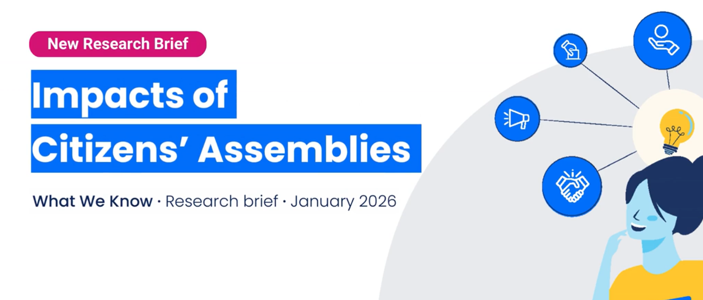
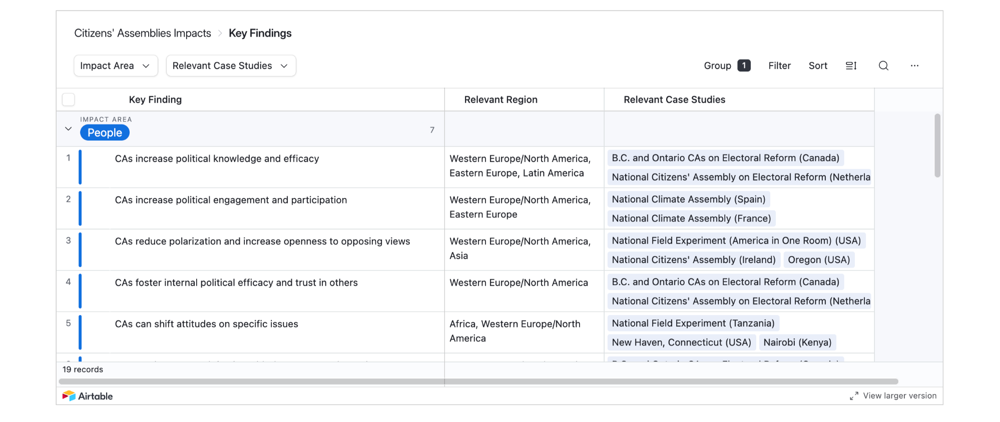

Impacts of Citizens' Assemblies: A Summary of the Latest Research by People Powered

Open original publication at People Powered's webisteCitizens’ assemblies have gained considerable momentum in the last decade as an innovative tool for participatory deliberation, agenda setting, and policymaking. But what do we know about their impacts? We read nearly 70 studies (so you don’t have to) and synthesized the latest research into 19 key findings to help you understand, advocate for, and implement citizens’ assemblies.
At the individual level, global research shows that citizens’ assemblies reliably increase the knowledge, skills, and political efficacy of those who participate directly in the process, and can even contribute to depolarization by helping citizens with more extreme political views find common ground.
At the community level, there is consistent evidence of positive spillover effects to those who simply learn about the assembly process and recommendations, such as increasing trust in government and their fellow citizens, and increased willingness of non-participants to engage in politics and consider alternate political views.
At the level of government, citizens’ assemblies can even reshape traditional government processes and dynamics, broadening legislators’ perspectives, bypassing institutional deadlocks, and giving a public mandate for policy action on long-term challenges like climate change.
Using an interactive Airtable, you can sort the findings by impact area, region, or case study and apply filters to find the information most relevant to your context or need. For example, if you are interested in creating a community-based advocacy campaign to build support for a Climate Assembly in Poland, you can easily filter the data in Airtable to focus on Community-level impacts of CAs, identify studies and findings from other European climate assemblies, or even pull examples from case studies of other CAs in Poland.
